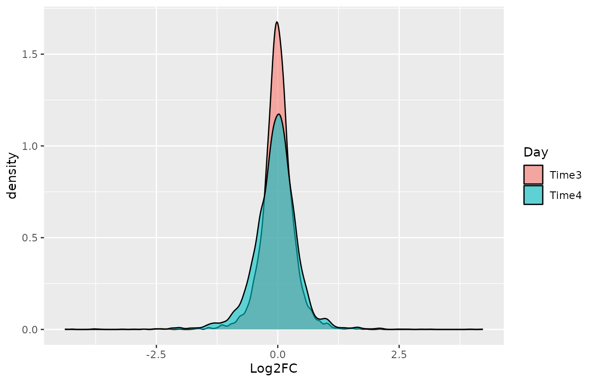
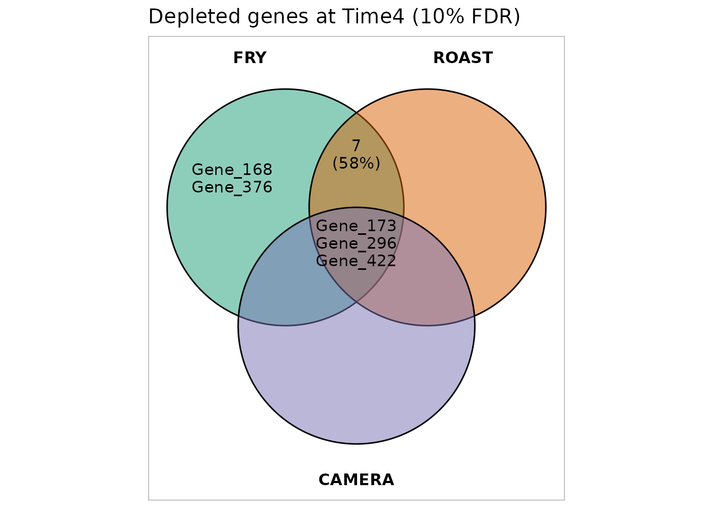
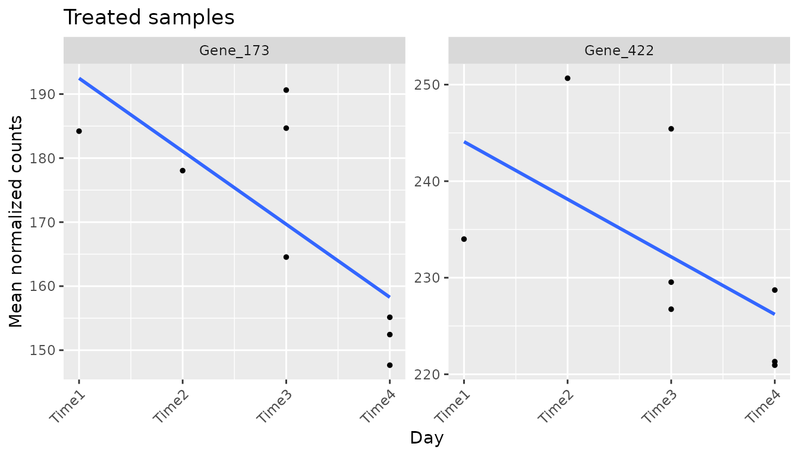
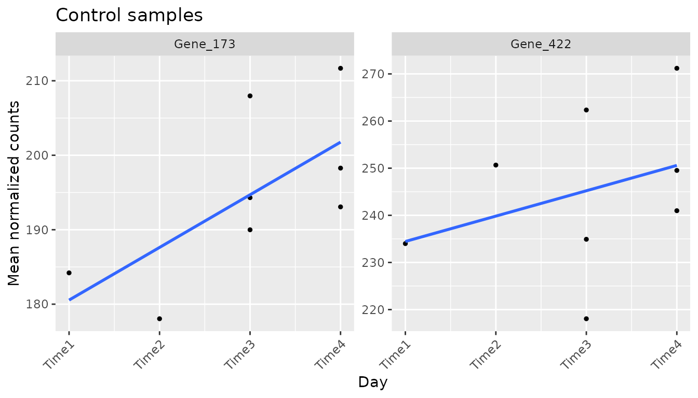
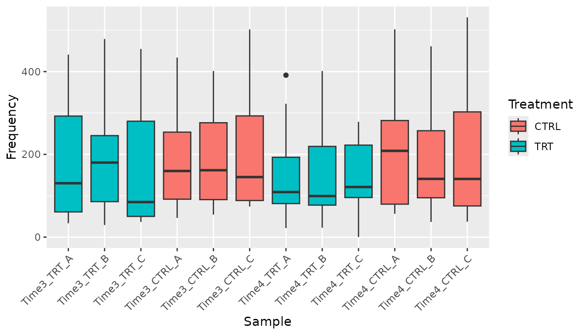
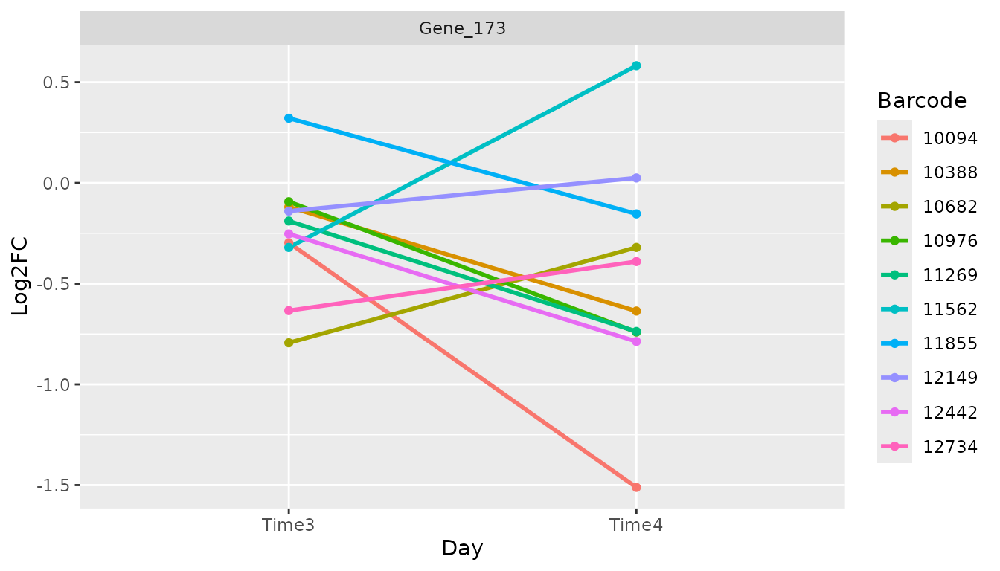
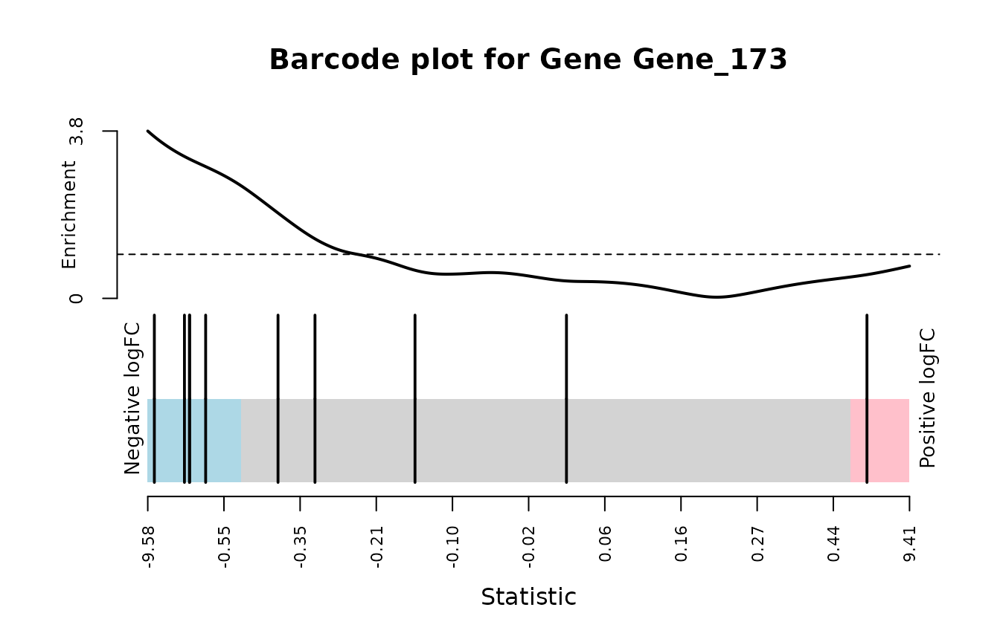

Tutorial 3: Finding and validating hits
Emanuel Michele Soda
Istituto Europeo Oncologia (IEO), Milano, Italyemanuelsoda@gmail.com
Elena Ceccacci
Istituto Europeo Oncologia (IEO), Milano, Italyelena.ceccacci@ieo.it
2026-10-16
Source:vignettes/Tutorial_3_Finding_hits.Rmd
Tutorial_3_Finding_hits.RmdAbout this tutorial
A hit is a gene whose barcodes change consistently in the treated samples compared with the control samples. In a dropout (loss of function) screen the interesting hits are usually depleted: their knockdown kills the cells only in the presence of the treatment.
This tutorial explains, step by step:
- how to tell ScreenR which samples to compare;
- the statistical methods to find hits and how to read their results;
- how to combine the methods;
- how to check the candidate hits before trusting them.
It continues from the object of the previous tutorials:
library(ScreenR)
#> Warning: replacing previous import 'S4Arrays::makeNindexFromArrayViewport' by
#> 'DelayedArray::makeNindexFromArrayViewport' when loading 'SummarizedExperiment'
library(dplyr)
library(ggplot2)
data(count_table)
data(annotation_table)
counts <- count_table
colnames(counts) <- c(
"Barcode", "Time1", "Time2", "Time3_TRT_A", "Time3_TRT_B", "Time3_TRT_C",
"Time3_CTRL_A", "Time3_CTRL_B", "Time3_CTRL_C",
"Time4_TRT_A", "Time4_TRT_B", "Time4_TRT_C",
"Time4_CTRL_A", "Time4_CTRL_B", "Time4_CTRL_C"
)
counts <- filter(counts, Barcode != "*")
groups <- factor(c(
"T1/T2", "T1/T2",
rep("Time3_TRT", 3), rep("Time3_CTRL", 3),
rep("Time4_TRT", 3), rep("Time4_CTRL", 3)
))
object <- create_screenr_object(
table = counts, annotation = annotation_table, groups = groups
)
object <- remove_all_zero_row(object)
object <- normalize_data(object)
object <- compute_data_table(object)Overview of the methods
| Method | Function | Unit | Gives an FDR | Uses replicates |
|---|---|---|---|---|
| Gene-level Z-score test | find_gene_zscore_hit() |
Compares the mean Z-score of the barcodes of each gene with random sets of barcodes | Yes | With compute_barcode_statistics()
|
| CAMERA | find_camera_hit() |
Tests whether the barcodes of a gene change more than the others | Yes | Yes |
| ROAST | find_roast_hit() |
Tests whether the barcodes of a gene change | Yes | Yes |
| Time course | find_time_hit() |
Tests whether the treatment effect changes over time | Yes | Yes |
| Legacy Z-score rules |
find_zscore_hit(),
find_robust_zscore_hit()
|
Counts barcodes below the median Z-score | No | No |
The FDR (false discovery rate) is the expected
proportion of false hits among the genes you call hits: with an FDR cut
off of 5%, about 1 in 20 of the reported genes is expected to be a false
positive. Each method returns only the genes with
FDR <= fdr (default 0.05); use fdr = 1 to
get all the genes and rank them yourself.
Step 1: which samples to compare
CAMERA, ROAST and the replicate-aware statistics use a linear model, which needs two things:
- a design matrix, which says which group each sample belongs to;
- a contrast, which says which groups to compare.
create_design_matrix() builds the design matrix from the
groups of the object: one column per group, and a 1 in the column of the
group of each sample. Group names that are not valid R names are changed
(T1/T2 becomes T1.T2).
design <- create_design_matrix(object)
design
#> T1.T2 Time3_CTRL Time3_TRT Time4_CTRL Time4_TRT
#> 1 1 0 0 0 0
#> 2 1 0 0 0 0
#> 3 0 0 1 0 0
#> 4 0 0 1 0 0
#> 5 0 0 1 0 0
#> 6 0 1 0 0 0
#> 7 0 1 0 0 0
#> 8 0 1 0 0 0
#> 9 0 0 0 0 1
#> 10 0 0 0 0 1
#> 11 0 0 0 0 1
#> 12 0 0 0 1 0
#> 13 0 0 0 1 0
#> 14 0 0 0 1 0
#> attr(,"assign")
#> [1] 1 1 1 1 1
#> attr(,"contrasts")
#> attr(,"contrasts")$groups
#> [1] "contr.treatment"create_contrast() builds the comparison between groups
by name: here treated against control at each time point.
contrast_time3 <- create_contrast(design,
treatment = "Time3_TRT", control = "Time3_CTRL"
)
contrast_time4 <- create_contrast(design,
treatment = "Time4_TRT", control = "Time4_CTRL"
)
contrast_time4
#> T1.T2 Time3_CTRL Time3_TRT Time4_CTRL Time4_TRT
#> 0 0 0 -1 1The contrast gives +1 to the treated group and -1 to the control
group: the result is the treated minus the control. With several groups
on one side (for example
treatment = c("Time3_TRT", "Time4_TRT")) their average is
used.
Common mistake. Do not build the design with
model.matrix(~ groups) and rename its columns: the first
group becomes the intercept and the columns are in alphabetical order,
so the names end up on the wrong columns and the wrong samples are
compared. create_design_matrix() and
create_contrast() avoid this.
The examples below compare treated and control samples at Time4.
Step 2: the Z-score method
Fold changes and Z-scores
compute_metrics() averages the replicates of the treated
and of the control samples of one time point and computes for each
barcode:
| Column | Meaning |
|---|---|
Treated, Control
|
Mean normalized count |
Log2FC |
log2((Treated + 0.5) / (Control + 0.5)): negative means depleted in the treated samples |
Zscore |
Log2FC standardized with the mean and standard deviation of all barcodes |
ZscoreRobust |
Log2FC standardized with the median and MAD, less sensitive to outliers |
The treatment and control arguments are
values of the Treatment column of get_sample_table(), and
day a value of its Day column.
metrics_time4 <- compute_metrics(object,
control = "CTRL", treatment = "TRT", day = "Time4"
)
head(metrics_time4)
#> # A tibble: 6 × 9
#> Barcode Gene Treated Control Log2FC Zscore ZscoreRobust Day Treatment
#> <fct> <chr> <dbl> <dbl> <dbl> <dbl> <dbl> <chr> <chr>
#> 1 1 Gene_386 245. 279. -0.187 -0.303 -0.482 Time4 TRT
#> 2 10 Gene_519 74.3 118. -0.665 -1.30 -1.85 Time4 TRT
#> 3 100 Gene_84 38.6 32.1 0.262 0.634 0.806 Time4 TRT
#> 4 1000 Gene_350 126. 115. 0.138 0.376 0.452 Time4 TRT
#> 5 10001 Gene_379 412. 453. -0.138 -0.200 -0.340 Time4 TRT
#> 6 10002 Gene_379 191. 207. -0.116 -0.155 -0.278 Time4 TRTplot_zscore_distribution() compares the Z-scores of
several time points: a treatment with an effect gives a longer left tail
at the later time point.
metrics_time3 <- compute_metrics(object,
control = "CTRL", treatment = "TRT", day = "Time3"
)
plot_zscore_distribution(
list(Time3 = metrics_time3, Time4 = metrics_time4),
alpha = 0.6
)
Gene-level test
find_gene_zscore_hit() computes for each gene the mean
Z-score of its barcodes and asks how often a random set of barcodes of
the same size has a score at least as low
(direction = "Down"). The random sets are drawn many times
(n_permutations), so the p-value needs no assumption on the
distribution of the Z-scores; seed makes it reproducible.
The p-values are then corrected for testing many genes (FDR).
If the library has control genes, their gene name can be given with
control_genes (for example
control_genes = "non-targeting"): the random sets are then
drawn from the controls, which cannot contain true hits. Do this only if
the controls behave like genes without effect. Non-targeting shRNAs
often do not: targeting shRNAs are usually somewhat depleted compared
with them, so every gene looks depleted (in the K562 screen of ScreenR
this called hundreds of non-essential genes). Check first that the
controls have the same scores as genes known to have no effect; when in
doubt, keep the default. statistic = "median" uses the
median instead of the mean, which is less affected by a single barcode
with a strong (possibly off-target) effect.
With reference = "empirical" the gene scores are
compared with an empirical null instead: the distribution of the scores
of the genes without effect, estimated from the centre of the
distribution of all the genes (plot_empirical_null() shows
it). The hits do not make it conservative, and it accounts for the
barcodes of a gene varying together, which makes the random sets of
barcodes give too small p-values, especially in shRNA screens (see
?find_gene_zscore_hit and Tutorial 4). It needs a
library with hundreds of genes, most of them without effect.
gene_zscore <- find_gene_zscore_hit(metrics_time4, fdr = 1, seed = 1)
head(gene_zscore)
#> # A tibble: 6 × 6
#> Gene NBarcodes Score Log2FC PValue FDR
#> <chr> <int> <dbl> <dbl> <dbl> <dbl>
#> 1 Gene_364 12 -1.55 -0.473 0.0000500 0.0267
#> 2 Gene_296 10 -1.31 -0.499 0.000460 0.123
#> 3 Gene_322 10 -1.13 -0.386 0.00148 0.263
#> 4 Gene_419 10 -1.08 -0.311 0.00209 0.279
#> 5 Gene_352 10 -1.02 -0.455 0.00318 0.340
#> 6 Gene_422 10 -0.951 -0.430 0.00455 0.405| Column | Meaning |
|---|---|
NBarcodes |
Number of barcodes of the gene |
Score |
Mean Z-score of the barcodes |
Log2FC |
Median log2 fold change of the barcodes |
PValue, FDR
|
Significance |
Using the replicates
compute_metrics() averages the replicates, so it cannot
tell a consistent barcode from a noisy one.
compute_barcode_statistics() tests each barcode with edgeR,
using the variability between replicates, and returns a Z-score that can
be used by find_gene_zscore_hit() in the same way. This is
the recommended input.
barcode_statistics <- compute_barcode_statistics(
object, design, contrast_time4
)
head(barcode_statistics)
#> # A tibble: 6 × 8
#> Barcode Gene Log2FC logCPM F PValue FDR Zscore
#> <chr> <chr> <dbl> <dbl> <dbl> <dbl> <dbl> <dbl>
#> 1 10208 Gene_380 0.109 8.56 0.438 0.510 0.835 0.658
#> 2 10502 Gene_380 -0.480 4.97 0.748 0.390 0.765 -0.859
#> 3 10796 Gene_380 -0.665 6.61 2.49 0.120 0.515 -1.56
#> 4 11089 Gene_380 -0.169 8.44 0.992 0.323 0.716 -0.988
#> 5 11382 Gene_380 -0.651 5.62 1.44 0.235 0.643 -1.19
#> 6 11675 Gene_380 -0.286 9.66 6.71 0.0119 0.219 -2.51
gene_zscore_edger <- find_gene_zscore_hit(barcode_statistics, fdr = 1,
seed = 1)
head(gene_zscore_edger)
#> # A tibble: 6 × 6
#> Gene NBarcodes Score Log2FC PValue FDR
#> <chr> <int> <dbl> <dbl> <dbl> <dbl>
#> 1 Gene_173 10 -1.58 -0.521 0.000240 0.128
#> 2 Gene_422 10 -1.45 -0.451 0.000700 0.187
#> 3 Gene_15 10 -1.37 -0.321 0.00131 0.233
#> 4 Gene_296 10 -1.31 -0.493 0.00187 0.250
#> 5 Gene_370 10 -1.24 -0.394 0.00304 0.280
#> 6 Gene_168 10 -1.21 -0.256 0.00355 0.280Legacy rules
find_zscore_hit() and
find_robust_zscore_hit() call a gene a hit when more than
number_barcode of its barcodes are below the median
Z-score. They are kept for compatibility, but they do not give a p-value
and many genes without an effect pass them by chance (about 17% with 10
barcodes and number_barcode = 6): prefer
find_gene_zscore_hit().
nrow(find_zscore_hit(metrics_time4, number_barcode = 6))
#> [1] 97Step 3: CAMERA and ROAST
Both test the barcodes of each gene as a set, using edgeR on the raw counts.
- CAMERA asks whether the barcodes of a gene change more than the other barcodes (a competitive test), taking into account the correlation between barcodes.
-
ROAST asks whether the barcodes of a gene
change at all (a self-contained test). It uses random
rotations: set
seedto get the same result every time, and use many rotations (nrot, default 9999) for a real analysis; here 999 keep the tutorial fast. Withmethod = "fry"the same test is computed exactly, without rotations: it is faster and its p-values are not limited by the number of rotations.
CAMERA becomes conservative when many genes have an effect, because the other barcodes it compares with then include true hits; ROAST and fry do not have this limitation. On the other hand ROAST and fry test each gene on its own barcodes, so they rely on the variability between replicates: they need replicates in both groups, have little power with two replicates or noisy data, and find almost nothing when the control is a single sample (for example a plasmid library). The p-values of all three are one-sided, for the requested direction.
number_barcode sets the minimum number of barcodes (more
than number_barcode) a gene needs to be tested, and
direction chooses depleted ("Down") or
enriched ("Up") genes.
camera <- find_camera_hit(object, design, contrast_time4, fdr = 1)
head(camera)
#> # A tibble: 6 × 6
#> Gene NGenes Direction PValue FDR Log2FC
#> <chr> <dbl> <fct> <dbl> <dbl> <dbl>
#> 1 Gene_173 10 Down 0.000214 0.0882 -0.515
#> 2 Gene_422 10 Down 0.000418 0.0882 -0.433
#> 3 Gene_296 10 Down 0.000495 0.0882 -0.508
#> 4 Gene_352 10 Down 0.00200 0.232 -0.467
#> 5 Gene_87 10 Down 0.00250 0.232 -0.436
#> 6 Gene_370 10 Down 0.00295 0.232 -0.344
roast <- find_roast_hit(object, design, contrast_time4,
nrot = 999, seed = 42, fdr = 1
)
head(select(roast, Gene, NGenes, PropDown, PropUp, Direction, PValue, FDR,
Log2FC))
#> # A tibble: 6 × 8
#> Gene NGenes PropDown PropUp Direction PValue FDR Log2FC
#> <chr> <int> <dbl> <dbl> <fct> <dbl> <dbl> <dbl>
#> 1 Gene_296 10 0.6 0 Down 0.0005 0.0534 -0.508
#> 2 Gene_173 10 0.5 0.1 Down 0.0005 0.0534 -0.515
#> 3 Gene_412 10 0.5 0.1 Down 0.0005 0.0534 -0.325
#> 4 Gene_422 10 0.5 0 Down 0.0005 0.0534 -0.433
#> 5 Gene_325 10 0.3 0.1 Down 0.0005 0.0534 -0.246
#> 6 Gene_15 10 0.5 0 Down 0.001 0.0668 -0.325| Column | Meaning |
|---|---|
NGenes |
Number of barcodes of the gene |
Direction |
Down or Up |
PValue, FDR
|
Significance |
PropDown, PropUp (ROAST) |
Proportion of barcodes going down or up |
Log2FC |
Median log2 fold change of the barcodes |
How many genes pass different FDR cut offs:
fdr_levels <- c(0.05, 0.1, 0.25)
tibble(
FDR = fdr_levels,
zscore = vapply(fdr_levels, function(x) sum(gene_zscore_edger$FDR <= x),
1L),
CAMERA = vapply(fdr_levels, function(x) sum(camera$FDR <= x), 1L),
ROAST = vapply(fdr_levels, function(x) sum(roast$FDR <= x), 1L)
)
#> # A tibble: 3 × 4
#> FDR zscore CAMERA ROAST
#> <dbl> <int> <int> <int>
#> 1 0.05 0 0 0
#> 2 0.1 0 3 11
#> 3 0.25 4 7 55The effect of the treatment in this example is weak: no gene reaches an FDR of 5%. In the rest of the tutorial we use 25% to illustrate the steps; in your own analysis, choose the cut off before looking at the results and report it.
alpha <- 0.25Step 4: the time course
When the screen has several time points, find_time_hit()
asks whether the treatment effect changes over time,
with one model for all the time points instead of one analysis per time
point. Untreated and treated samples each follow a line over time; the
method tests the difference between the slopes. Early samples taken
before the treatment can be added as baseline. The time
points are given in order with days and are treated as
equally spaced.
time_hit <- find_time_hit(object,
treatment = "TRT", control = "CTRL",
baseline = c("Time1", "Time2"),
days = c("Time1", "Time2", "Time3", "Time4"),
fdr = 1
)
head(time_hit)
#> # A tibble: 6 × 6
#> Gene NGenes Direction PValue FDR Log2FC
#> <chr> <dbl> <fct> <dbl> <dbl> <dbl>
#> 1 Gene_372 12 Down 0.000000157 0.0000836 -0.974
#> 2 Gene_296 10 Down 0.000000706 0.000135 -1.17
#> 3 Gene_364 12 Down 0.000000760 0.000135 -1.01
#> 4 Gene_412 10 Down 0.000112 0.0149 -0.815
#> 5 Gene_370 10 Down 0.000565 0.0604 -0.389
#> 6 Gene_349 10 Down 0.00376 0.318 -0.192Here Log2FC is the change of the treatment log2 fold
change per time point: a negative value means that the depletion grows
over time. In this dataset 4 genes have an FDR below 5% (Gene_372,
Gene_296, Gene_364, Gene_412): the time course model is more powerful
here than the comparison at a single time point, because it uses all the
samples.
Step 5: combining the methods
The methods look at the data in different ways, so genes found by
several of them are the most convincing. plot_common_hit()
shows the overlap between the hits of three methods:
plot_common_hit(
hit_zscore = filter(gene_zscore_edger, FDR <= alpha),
hit_camera = filter(camera, FDR <= alpha),
hit_roast = filter(roast, FDR <= alpha),
show_elements = FALSE, show_percentage = FALSE
)
find_common_hit() returns the genes found by at least
common_in methods:
common <- find_common_hit(
filter(gene_zscore_edger, FDR <= alpha),
filter(camera, FDR <= alpha),
filter(roast, FDR <= alpha),
common_in = 2
)
common
#> [1] "Gene_173" "Gene_422" "Gene_15" "Gene_296" "Gene_352" "Gene_87" "Gene_370"summarise_hits() puts the FDR of every method in one
table. NMethods counts the methods in which the gene passes
the cut off, and MaxFDR (the largest FDR) is a conservative
score to rank the genes supported by all the methods. Pass the tables
computed with fdr = 1, so that every gene has a value.
summary <- summarise_hits(
list(
zscore = gene_zscore_edger, camera = camera,
roast = roast, time = time_hit
),
fdr = alpha
)
head(summary, 10)
#> # A tibble: 10 × 8
#> Gene FDR_zscore FDR_camera FDR_roast FDR_time NMethods MaxFDR Hit
#> <chr> <dbl> <dbl> <dbl> <dbl> <dbl> <dbl> <lgl>
#> 1 Gene_296 0.250 0.0882 0.0534 0.000135 4 0.250 TRUE
#> 2 Gene_370 0.280 0.232 0.111 0.0604 3 0.280 FALSE
#> 3 Gene_349 0.390 0.263 0.0668 0.318 1 0.390 FALSE
#> 4 Gene_352 0.280 0.232 0.157 0.508 2 0.508 FALSE
#> 5 Gene_87 0.280 0.232 0.207 0.508 2 0.508 FALSE
#> 6 Gene_422 0.187 0.0882 0.0534 0.545 3 0.545 FALSE
#> 7 Gene_412 0.590 0.306 0.0534 0.0149 2 0.590 FALSE
#> 8 Gene_325 0.649 0.738 0.0534 0.318 1 0.738 FALSE
#> 9 Gene_173 0.128 0.0882 0.0534 0.742 3 0.742 FALSE
#> 10 Gene_168 0.280 0.380 0.153 0.742 1 0.742 FALSEThe column Hit is TRUE when the gene passes
the cut off in every method (MaxFDR <= alpha). A note on
interpretation: the combined list does not have a guaranteed false
discovery rate, so treat it as a short list of candidates to validate.
In this dataset 1 gene(s) pass all four methods at 25%, so below we
check the genes found by at least two of the three methods of the Venn
diagram.
Step 6: checking the candidates
Statistics can produce false positives, so look at the data of each candidate.
candidates <- head(common, 2)
candidates
#> [1] "Gene_173" "Gene_422"Trend over time
plot_trend() shows the mean frequency of the barcodes of
a gene in the chosen samples (group_var takes values of the
Treatment column). A depleted hit goes down in the treated samples but
not in the controls.
plot_trend(object,
genes = candidates, group_var = c("Time1", "Time2", "TRT"),
nrow = 1, ncol = 2
) +
theme(axis.text.x = element_text(angle = 45, hjust = 1)) +
ggtitle("Treated samples")
plot_trend(object,
genes = candidates, group_var = c("Time1", "Time2", "CTRL"),
nrow = 1, ncol = 2
) +
theme(axis.text.x = element_text(angle = 45, hjust = 1)) +
ggtitle("Control samples")
Distribution of the barcodes
plot_boxplot() shows the frequencies of all the barcodes
of a gene in each sample:
plot_boxplot(object,
genes = candidates[1], group_var = c("TRT", "CTRL"),
fill_var = "Treatment"
) +
theme(axis.text.x = element_text(angle = 45, hjust = 1))
Barcode by barcode
A real hit should be supported by most of its barcodes, not by one or
two. plot_barcode_trend() shows the log2 fold change of
each barcode over the time points:
plot_barcode_trend(
list(Time3 = metrics_time3, Time4 = metrics_time4),
genes = candidates[1]
)
#> $Gene_173
plot_barcode_hit() ranks all the barcodes by their log2
fold change and places the barcodes of a gene on the ranking (vertical
lines): most lines on the left side means that the gene is depleted. The
line on top shows where the barcodes of the gene are concentrated (above
1, dashed line), and the bottom panel shows their log2 fold changes
(show_log2fc = FALSE hides it):
plot_barcode_hit(object, design,
contrast = contrast_time4, gene = candidates[1]
)
find_discordant_barcodes() lists the barcodes that
behave very differently from the other barcodes of their gene, which may
have off-target effects:
discordant <- find_discordant_barcodes(metrics_time4, threshold = 3)
filter(discordant, Gene %in% candidates)
#> # A tibble: 0 × 5
#> # ℹ 5 variables: Barcode <fct>, Gene <chr>, Log2FC <dbl>, GeneLog2FC <dbl>,
#> # Deviation <dbl>Additional filters
Two filters can remove candidates that are not convincing:
-
filter_by_slope()keeps the genes whose frequency decreases more over time in the treated samples than in the control samples; -
filter_by_variance()removes the genes whose barcodes disagree too much (variance of the barcode log2 fold changes abovevariance).
filter_by_slope(object,
genes = candidates,
group_var_treatment = c("Time1", "Time2", "TRT"),
group_var_control = c("Time1", "Time2", "CTRL")
)
#> # A tibble: 2 × 3
#> Gene slope_control slope_treatment
#> <chr> <dbl> <dbl>
#> 1 Gene_173 7.07 -11.4
#> 2 Gene_422 5.38 -5.96
filter_by_variance(object,
genes = candidates, matrix_model = design,
contrast = contrast_time4, variance = 0.5
) %>%
distinct(Gene, Variance)
#> # A tibble: 2 × 2
#> Gene Variance
#> <chr> <dbl>
#> 1 Gene_173 0.324
#> 2 Gene_422 0.227Summary
| Step | What to do |
|---|---|
| 1 |
create_design_matrix() and
create_contrast() for the comparison |
| 2 |
compute_barcode_statistics() +
find_gene_zscore_hit()
|
| 3 |
find_camera_hit() and find_roast_hit()
(with seed) |
| 4 |
find_time_hit() if there are several time points |
| 5 |
plot_common_hit() and
summarise_hits()
|
| 6 |
plot_trend(), plot_boxplot(),
plot_barcode_trend(), plot_barcode_hit(),
find_discordant_barcodes()
|
Choose the FDR cut off before the analysis, report it, and validate the candidates experimentally.
sessionInfo()
#> R version 4.6.1 (2026-06-24)
#> Platform: x86_64-pc-linux-gnu
#> Running under: Ubuntu 24.04.5 LTS
#>
#> Matrix products: default
#> BLAS: /usr/lib/x86_64-linux-gnu/openblas-pthread/libblas.so.3
#> LAPACK: /usr/lib/x86_64-linux-gnu/openblas-pthread/libopenblasp-r0.3.26.so; LAPACK version 3.12.0
#>
#> locale:
#> [1] LC_CTYPE=C.UTF-8 LC_NUMERIC=C LC_TIME=C.UTF-8
#> [4] LC_COLLATE=C.UTF-8 LC_MONETARY=C.UTF-8 LC_MESSAGES=C.UTF-8
#> [7] LC_PAPER=C.UTF-8 LC_NAME=C LC_ADDRESS=C
#> [10] LC_TELEPHONE=C LC_MEASUREMENT=C.UTF-8 LC_IDENTIFICATION=C
#>
#> time zone: UTC
#> tzcode source: system (glibc)
#>
#> attached base packages:
#> [1] stats graphics grDevices utils datasets methods base
#>
#> other attached packages:
#> [1] ggplot2_4.0.3 dplyr_1.2.1 ScreenR_1.15.15 BiocStyle_2.40.0
#>
#> loaded via a namespace (and not attached):
#> [1] SummarizedExperiment_1.42.0 gtable_0.3.6
#> [3] xfun_0.61 bslib_0.12.0
#> [5] Biobase_2.72.0 lattice_0.22-9
#> [7] vctrs_0.7.3 tools_4.6.1
#> [9] generics_0.1.4 stats4_4.6.1
#> [11] tibble_3.3.1 pkgconfig_2.0.3
#> [13] Matrix_1.7-5 RColorBrewer_1.1-3
#> [15] S7_0.2.2 desc_1.4.3
#> [17] S4Vectors_0.50.3 lifecycle_1.0.5
#> [19] compiler_4.6.1 farver_2.1.2
#> [21] stringr_1.6.0 textshaping_1.0.5
#> [23] statmod_1.5.2 Seqinfo_1.2.0
#> [25] ggvenn_0.1.19 htmltools_0.5.9
#> [27] sass_0.4.10 yaml_2.3.12
#> [29] pillar_1.11.1 pkgdown_2.2.1
#> [31] jquerylib_0.1.4 tidyr_1.3.2
#> [33] DelayedArray_0.38.2 cachem_1.1.0
#> [35] limma_3.68.5 abind_1.4-8
#> [37] nlme_3.1-169 tidyselect_1.2.1
#> [39] locfit_1.5-9.12 digest_0.6.39
#> [41] stringi_1.8.9 purrr_1.2.2
#> [43] bookdown_0.48 splines_4.6.1
#> [45] labeling_0.4.3 fastmap_1.2.0
#> [47] grid_4.6.1 cli_3.6.6
#> [49] SparseArray_1.12.3 magrittr_2.0.5
#> [51] patchwork_1.3.2 S4Arrays_1.12.1
#> [53] utf8_1.2.6 withr_3.0.3
#> [55] edgeR_4.10.5 scales_1.4.0
#> [57] rmarkdown_2.32 XVector_0.52.0
#> [59] matrixStats_1.5.0 otel_0.2.0
#> [61] ragg_1.5.2 evaluate_1.0.5
#> [63] knitr_1.52 GenomicRanges_1.64.0
#> [65] IRanges_2.46.0 mgcv_1.9-4
#> [67] rlang_1.3.0 glue_1.8.1
#> [69] BiocManager_1.30.27 BiocGenerics_0.58.1
#> [71] jsonlite_2.0.0 R6_2.6.1
#> [73] MatrixGenerics_1.24.0 systemfonts_1.3.2
#> [75] fs_2.1.0